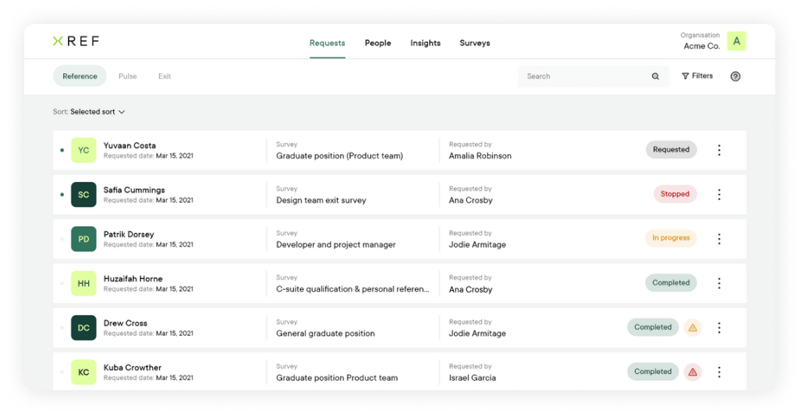

Recruit, retain and
remember your people
Simplify your talent journey and make confident, people-focused decisions with Xref.
Introducing Xref
Get feedback across the entire talent journey
Simple
Save time: Create and send a survey in as little as 30 seconds. Feedback is compiled in easy to understand graphs for actionable insights.
Simple
Save time: Create and send a survey in as little as 30 seconds. Feedback is compiled in easy to understand graphs for actionable insights.
Simple
Save time: Create and send a survey in as little as 30 seconds. Feedback is compiled in easy to understand graphs for actionable insights.
Reference
Recruit only the best validated talent.
Reduce time to hire and secure top talent fast. Make informed, compliant hiring decisions with Xref’s automated reference checking software.
Exits
Remember
Want the secret to reduce attrition and understand what metrics your organisation performs well at or can improve upon? Conduct a Pulse Survey.
Exits New
Remember
Collect, analyse and measure feedback from departing employees. Reduce attrition and improve retention over time by collecting consistent data to improve organisational performance.
Platform
Automating your people journey
Survey builder
Create compliant, non-bias surveys in seconds. Choose a Reference or Exit Survey template or build your own from a selection of HR-approved, compliant, non-bias questions.
Learn moreAutomated requests
Receive feedback faster with automated requests. Save time and reduce manual, repetitive tasks with automated survey requests, easily accessible all in one place.
Learn morePeople records
Build strong talent relationships with centralised people records. Person-specific feedback is stored in one place to easily recruit, retain and remember talent.
Learn moreInsights
Know your next move with people and organisational insights. From an aggregated overview of data to detailed feedback, find the insights you need to make confident business decisions.
Learn more